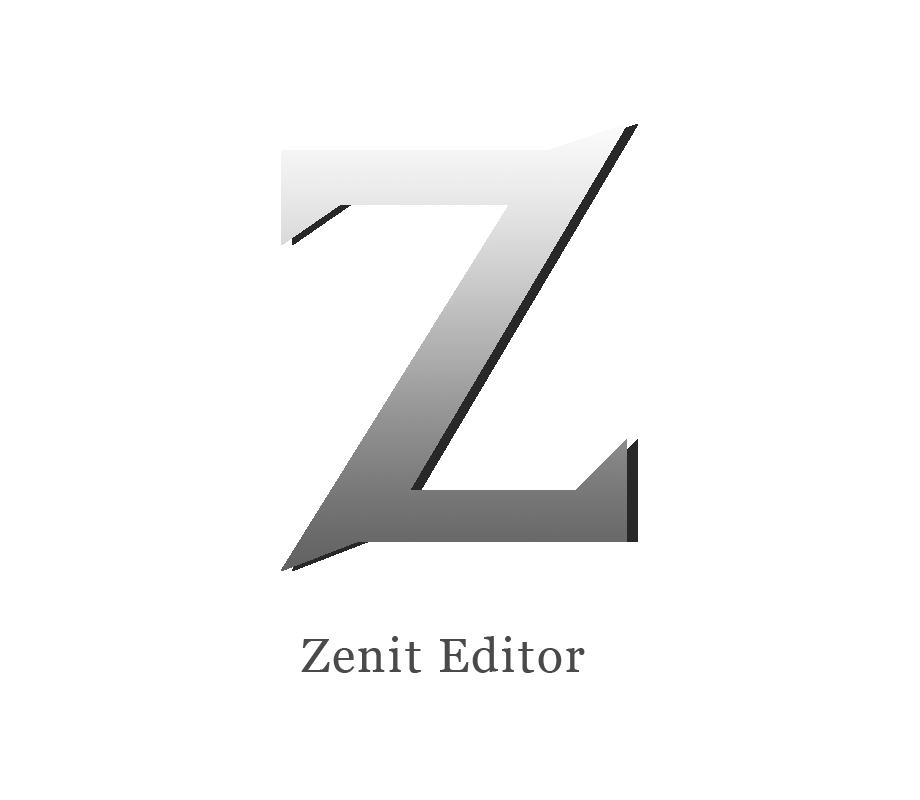

Zenit Editor
Zenit is a procedural material creator node-based in OpenGL and C++ for the final thesis at UPC-CITM. This tool is centered in the PBR metallic workflow, allowing to create each different textures that take part in this technique.
Nowadays it is under development. Stay tuned for more information!